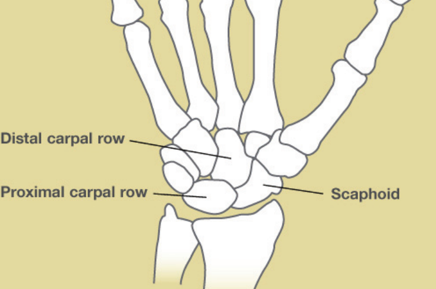
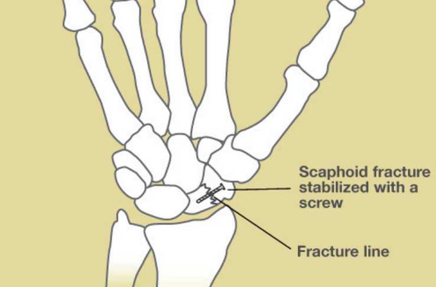
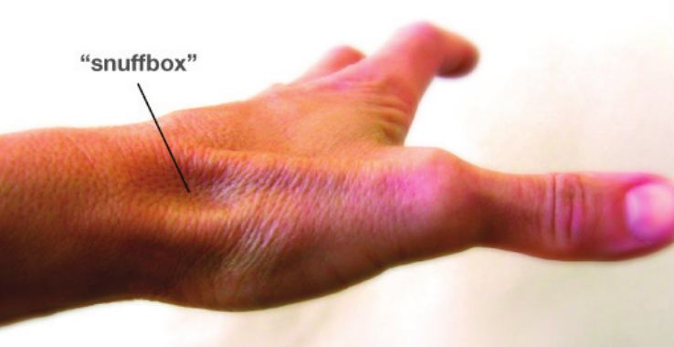

Condición
Fractura del Escafoides
Una fractura pequeña pero seria de la muñeca que es fácil de pasar por alto. El tratamiento temprano hace una gran diferencia.

Illustration © American Society for Surgery of the Hand
¿Qué es una fractura del escafoides?
El escafoides es un hueso pequeño de la muñeca, aproximadamente del tamaño y la forma de una castaña. Está en la base del pulgar y tiene un papel clave en el movimiento de la muñeca. Una fractura del escafoides es una rotura de este hueso. Como el escafoides tiene una irrigación sanguínea frágil, una fractura no diagnosticada o tratada tarde puede no curarse, lo que causa dolor y artritis de muñeca con el tiempo. El diagnóstico temprano importa.
Síntomas comunes
- Dolor en el lado del pulgar de la muñeca después de una caída
- Sensibilidad en la pequeña depresión en la base del pulgar (la "tabaquera")
- Dolor al agarrar o pellizcar
- Hinchazón leve, a veces sin moretones obvios
- Dolor que a menudo se descarta al principio como una "muñeca esguinzada"
¿Por qué ocurre?
Casi todas las fracturas del escafoides ocurren después de una caída sobre una mano extendida. Son más comunes en adultos jóvenes activos, pero pueden ocurrir a cualquier edad. Como la hinchazón y los moretones iniciales suelen ser leves, muchos pacientes creen que la muñeca solo está esguinzada y retrasan ver al médico.
Opciones de tratamiento
Tratamiento no quirúrgico
- Yeso corto de brazo. Para fracturas no desplazadas, se usa un yeso que cubre la muñeca durante 6 a 12 semanas. Un yeso corto estándar funciona tan bien como un yeso con espica para el pulgar en la mayoría de las fracturas del escafoides. La ubicación de la fractura importa: las fracturas cerca del lado del pulgar (polo distal) curan de forma más confiable, mientras que las fracturas cerca del lado de la muñeca (polo proximal) curan más lentamente y a veces fallan con un yeso porque el suministro de sangre a esa parte del hueso es más tenue.
Tratamiento quirúrgico
- Fijación con tornillo. Un tornillo pequeño colocado a través de la fractura por una incisión muy pequeña estabiliza el hueso. Esto permite a la mayoría de pacientes volver a la actividad antes, evitar un yeso largo, y tener mayor probabilidad de curación, especialmente para fracturas cerca del lado de la muñeca (polo proximal) del escafoides o cualquier fractura desplazada.
- Injerto óseo. Si un escafoides ya no ha curado (no-unión), se usa cirugía con injerto óseo para lograr que cure. Estos son casos más complejos y el Dr. Barrera le explicará el plan.

Illustration © American Society for Surgery of the Hand
Qué esperar en su visita
El Dr. Barrera examinará su muñeca y obtendrá radiografías. Las fracturas del escafoides a veces son invisibles en la radiografía durante la primera semana o dos. Si el examen sugiere una lesión del escafoides pero las radiografías son negativas, lo colocarán en una férula y lo traerán de vuelta para repetir las radiografías o lo enviarán para una resonancia o tomografía, que pueden detectar fracturas que la radiografía no ve.

Illustration © American Society for Surgery of the Hand
Llámenos si una "muñeca esguinzada" después de una caída no mejora en una o dos semanas, o si hay dolor en la base del pulgar que le impide agarrar. No diagnosticar una fractura del escafoides es la razón más común por la que estas lesiones terminan necesitando cirugía más compleja después.
¿Preguntas?
Llame a su consultorio para preguntas no urgentes:
- NYU Langone Laurelton · 646-501-4950
- NYU Orthopedic, Woodside · 929-429-3222
- NYU Orthopedic, Richmond Hill · 718-206-6923
- Jamaica Hospital Ambulatory Care Center (ACC) · 718-301-0720
Consulte la información de nuestras oficinas para direcciones y números de fax.